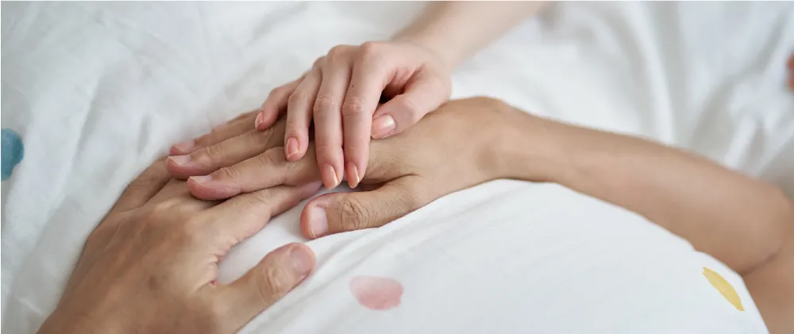
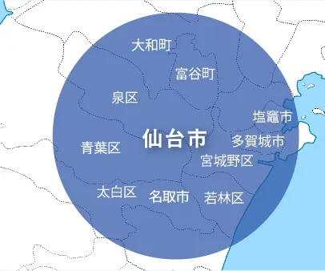

訪問診療で、地域医療の問題を解決します。
このような方は、当院にご相談ください。
通院が困難な方、要介護・寝たきりの方・がん・老衰・末期・難病など在宅で緩和ケアを希望される方、ご自宅や施設での療養を
希望される方、病院ではなく最後まで住み慣れた場所で過ごしたい方、在宅医療が必要な方
芳縁会の特徴
芳縁会では、24 時間365 日の緊急往診体制で医師や看護師が直接患者様のご自宅を訪れ、その場で適切な医療サービスを提供し
ます。定期的にご自宅での生活環境や生活習慣も把握し、よりパーソナライズされたケアを提供します。
24時間365日対応
薬の処方
高齢・がん・難病の患者にも対応
末期の看取り
ご自宅で可能な処置について

芳縁在宅診療所では、以下の診察エリアを訪問いたします。
お住まいが診察エリアの範囲外の方も、遠慮なく一度お問い合わせください。

仙台市全域
名取市、多賀城市、塩釜市、富谷市
診療受付日
定期訪問
月曜日～金曜日
【午前】9：00～12：00
【午後】13：00～18：00
※24時間365日電話対応受付、随時診療